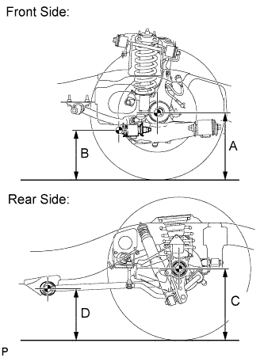

ACTIVE HEIGHT CONTROL SUSPENSION > INITIALIZATION |
| DESCRIPTION |
If replacing the suspension control ECU and/or height control sensor, perform the vehicle height offset calibration.
| VEHICLE HEIGHT OFFSET CALIBRATION |
| 1.PERFORM VEHICLE HEIGHT INSPECTION |
Adjust the pressure of the tires.
Stabilize the suspension by releasing the parking brake and bouncing the corners of the vehicle up and down.
Start the engine.
Perform the following operation twice:
Turn the engine switch off.
Connect the intelligent tester to the DLC3.
Move the shift lever to N and move the vehicle forward and rearward.
Turn the engine switch on (IG) and the tester on.
Check that the vehicle height is NORMAL.
 |
Perform the vehicle height inspection.
| Front (A minus B) | Rear (C minus D) |
| 101 mm (3.98 in.) | 94 mm (3.70 in.) |
Using a jack, set the vehicle to the standard vehicle height and eliminate any difference in height between the left and right sides of the vehicle.
Using the intelligent tester, enter the following menus: Chassis / AHC / Data List. Then read and record the values for "After Height Adjust" and "Height Adjust" for each wheel.
| Tester Display | Measurement Item/Range | Normal Condition | Diagnosis Note |
| FR Height Adjust | Display of vehicle height offset recorded value of front right wheel / min.: -3276.8 mm (-129 in.) max.: 3276.7 mm (129 in.) | - | - |
| FL Height Adjust | Display of vehicle height offset recorded value of front left wheel / min.: -3276.8 mm (-129 in.) max.: 3276.7 mm (129 in.) | - | - |
| RR Height Adjust | Display of vehicle height offset recorded value of rear right wheel / min.: -3276.8 mm (-129 in.) max.: 3276.7 mm (129 in.) | - | - |
| RL Height Adjust | Display of vehicle height offset recorded value of rear left wheel / min.: -3276.8 mm (-129 in.) max.: 3276.7 mm (129 in.) | - | - |
| FR After Height Adjust | Display of after-calibration vehicle height value of front right wheel / min.: -3276.8 mm (-129 in.) max.: 3276.7 mm (129 in.) | - | - |
| FL After Height Adjust | Display of after-calibration vehicle height value of front left wheel / min.: -3276.8 mm (-129 in.) max.: 3276.7 mm (129 in.) | - | - |
| RR After Height Adjust | Display of after-calibration vehicle height value of rear right wheel / min.: -3276.8 mm (-129 in.) max.: 3276.7 mm (129 in.) | - | - |
| RL After Height Adjust | Display of after-calibration vehicle height value of rear left wheel / min.: -3276.8 mm (-129 in.) max.: 3276.7 mm (129 in.) | - | - |
Turn the engine switch off.
| |||||
| 2.PERFORM VEHICLE HEIGHT OFFSET CALIBRATION |
Turn the engine switch off.
Connect the intelligent tester to the DLC3.
Turn the engine switch on (IG) and the tester on.
Enter the following menus: Chassis / AHC / Utility / Height offset.
For each wheel, follow the instructions on the tester screen and input the input value to complete the vehicle height offset calibration.
Remove the jack.
Start the engine.
Set the vehicle height to LO and check that LO of the multi-information display height control indicator stops blinking and illuminates.
Set the vehicle height to NORMAL and check that N of the height control indicator stops blinking and illuminates.
Turn the engine switch off.
Perform the vehicle height inspection. Check that the result is within +/-8 mm (+/-0.315 in.) of the standard value.
Perform yaw rate and G sensor zero point calibration (Click here).
|
| ||||
|---|---|---|---|---|---|